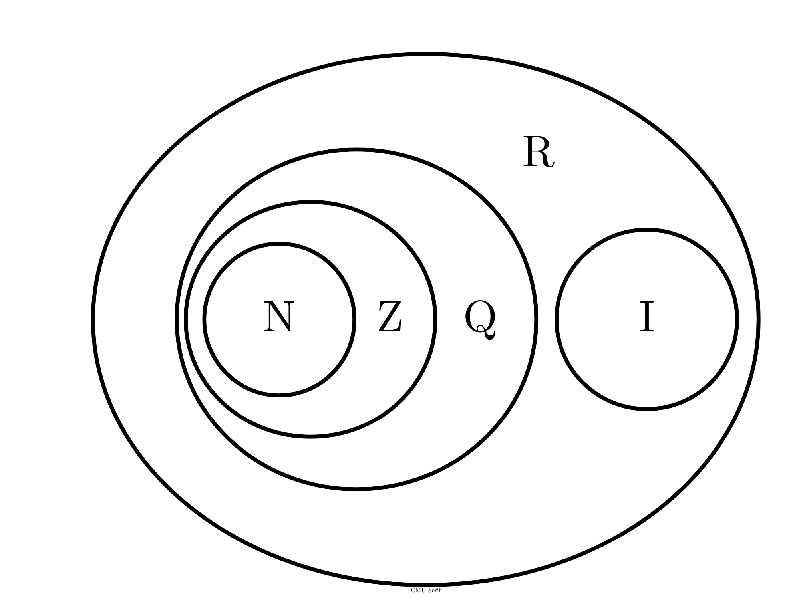

Gli insiemi numerici sono insiemi infiniti che raggruppano una determinata categoria di numeri. Partiamo subito con il primo...
Il simbolo è semplice da ricordare: \(\mathbb{N}\) di “naturali”. Il tratto obliquo si scrive due volte per differenziarlo da una generica \(N\) maiuscola.
Allora cosa sono i numeri naturali? Concettualmente si possono immaginare come tutti i numeri interi positivi. Si definiscono però come tutti i numeri che puoi ottenere partendo da \(0\) ed aggiungendo una unità alla volta (ovvero sommando \(1\)). Quindi avremo:
\[\mathbb{N} = {0,1,2,3,4,5,6,7,…}\]
Sono diffusi online video matematici che litigano per decidere se \(0\) appartiene ai numeri naturali o no. Infatti ci sono ancora dei dibattiti su questo argomento, ma in generale \(0\) viene accettato come appartenente ai numeri naturali.
Siccome li usiamo per contare, gli elementi di \(\mathbb{N}\) oltre ad essere chiamati numeri naturali, vengono talvolta chiamati numeri cardinali.
Il simbolo da ricordare questa volta è meno intuitivo, ma anche in questo caso, per differenziare \(\mathbb{Z}\) da una generica \(Z\), scriviamo due volte il lato obliquo.
I numeri relativi sono tutti gli interi caratterizzati da un segno, che può essere positivo (\(+\)), nullo (lo \(0\)), o negativo (\(-\)). Quindi ad \(\mathbb{N}\) aggiungiamo tutti gli interi negativi.
\[\mathbb{Z} ={…,-3,-2,-1,0,+1,+2,+3,…}\]
Notare che se chiamiamo tutti i numeri negativi \(\mathbb{N^-}\)
\[\mathbb{Z} ={0, -1, -2, -3, -4,…}\]
Avremo che \(\mathbb{Z}\) sarà l’unione di \(\mathbb{N}\) e \(\mathbb{N^-}\):
\[\mathbb{Z} =\mathbb{N} \cup \mathbb{N^-}\]
Di conseguenza \(\mathbb{N}\) è un sottoinsieme di \(\mathbb{Z}\).
Se si pensa che in inglese “rapporto” si dice “quotient”, il perché della \(\mathbb{Q}\) come simbolo ha più senso. Come per gli altri, mettiamo due volte il cerchietto per differenziare \(\mathbb{Q}\) dalla generica \(Q\).
I numeri razionali sono i tutti i numeri esprimibili come rapporto tra due numeri relativi. In altre parole, sono tutte le frazioni formate da numeri interi. Quindi, come per i numeri relativi, i numeri razionali sono caratterizzati da un segno: positivo (\(+\)), nullo (lo \(0\)), o negativo (\(-\)).
Dobbiamo però aggiungere una restrizione. Il numero relativo che sta al denominatore non può essere uguale a \(0\), perché non si può dividere per \(0.\)
Quindi:
\(c \in \mathbb{Q} \leftrightarrow c={ a \over b}, \) con \( a,b \in \mathbb{Q},b \neq 0\)
Esempi di numeri razionali sono:
\[{1 \over 2},{10 \over 7},-8,-{2 \over 3},-{9 \over 17},5,{4 \over 3}\]
\(-8\) e \(5\) sono numeri razionali? Certo, hanno soltanto \(1\) al denominatore. Infatti \(-8={-8 \over 1}.\)
Di conseguenza i numeri razionali contengono tutti i numeri relativi, ovvero \(\mathbb{Z}\) è un sottoinsieme di \(\mathbb{Z}.\)
Questa volta la \(\mathbb{I}\) è facile da ricordare perché sta per “irrazionale”. Come per gli altri mettiamo un doppio tratto per differenziarla dalla generica \(I.\)
Ai tempi di Pitagora si pensava che tutti i numeri fossero esprimibili tramite frazioni di numeri interi (i nostri numeri razionali). Però, osservarono che la diagonale di un quadrato di lato \(1\), per il teorema di Pitagora doveva essere uguale a \(\sqrt2). Dimostrarono che questo numero non era esprimibile tramite rapporto di numeri interi. Nascono così i numeri irrazionali.
Come avrete intuito, i numeri irrazionali sono tutti i numeri che non sono esprimibili tramite una frazione formata da numeri interi. Tra questi ci sono tutte le frazioni di numeri che non sono quadrati perfetti, ma anche \( \pi\) e molte altre costanti che si trovano in natura.
Quindi esempi di numeri irrazionali sono:
\[\sqrt2 ,\sqrt5 , \pi,\sqrt{7 \over 3},{1 \over \sqrt{10}}\]
La \(\mathbb{R}\) che sta per “reali” anche questa volta ha un doppio tratto per differenziarla dalla generica \(R\).
Adesso che conosciamo i numeri razionali ed irrazionali, sarebbe molto pratico avere un insieme che li contiene entrambi, l’insieme dei numeri reali:
\[ \mathbb{R} = \mathbb{Q} \in \mathbb{I}\]
Quindi esempi di numeri reali sono:
\[2,{7 \over 4},\sqrt7\]
Per comprendere poi meglio i legami tra i vari insiemi numerici proponiamo il seguente grafico di Eulero-Venn:
